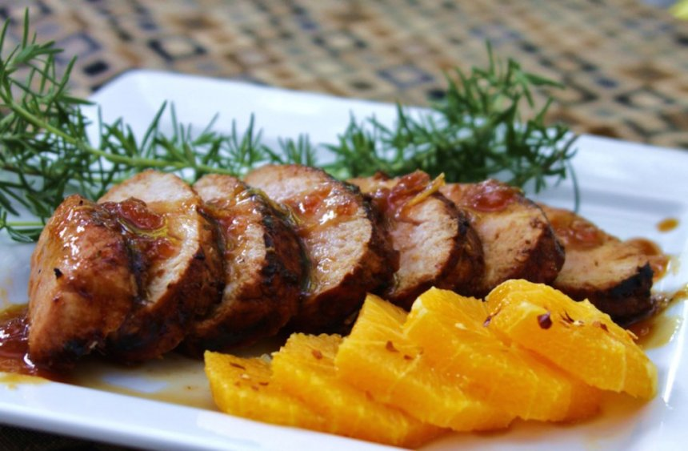

LOMO DE CERDO A LA NARANJA
SABE A NOCHEBUENA
Ingredientes: (para 6 personas)
- 1 kilo de lomo de cerdo
- 4 dientes de ajo, en mitades
- 40 g de almendras enteras, sin piel
- 1/2 tazas de cebolla, rebanada 1/4 cucharaditas de nuez moscada
- 2 cucharadas de mostaza
- 250 mililitros de jugo de naranja
- 1 taza de vino blanco
- 4 ramas de romero fresco
- 2 cucharaditas de aceite
- Sal y pimienta al gusto
Para acompañar:
- 2 tazas de zanahorias (en bastones), cocidas
- 200 g de papas cambray, en mitades

Elaboración:
- Precalienta el horno a 380 °C.
- Haz cortes al lomo con la punto de un cuchillo e inserta los pedazos de ajo y las almendras Salpimienta y calienta, una sartén con el aceite
- Sella por todos sus lados hasto que se dore.
- Vierte un poco más de aceite en lo sartén y agrega la cebolla. Dora por unos minutos y agrega la nuez moscada, la mostaza, el juego de naranja, el caldo de pollo y el vino blanco
- Mezcla y agrega las hojas de ro- mero, salpimienta. Cocina por unos minutos.
- Coloca el lomo en una charolo de paredes altas o un refractario. Cubre con la salsa.
- Tapa con aluminio y hornea por 45 minutos.
- Revisa si la salsa espesó y de no ser así, colócalo en una cacerola y añade una cucharadita de fécula de maíz disuelto en agua
- Cocina hasta que espece y rectifica sasón
- Rebana el lomo y acomoda en un plato extendido. Baña caon la salsa y acompaña con las zanahorias y papás
Pagina principal